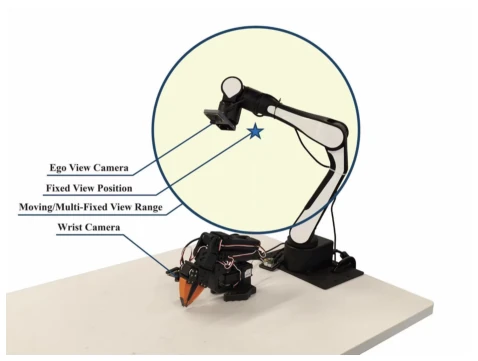
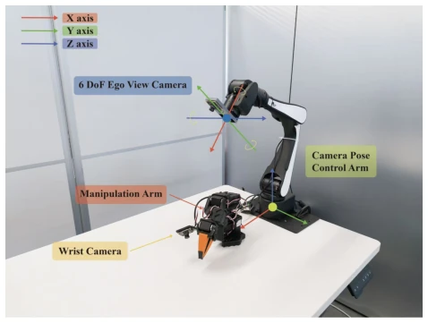
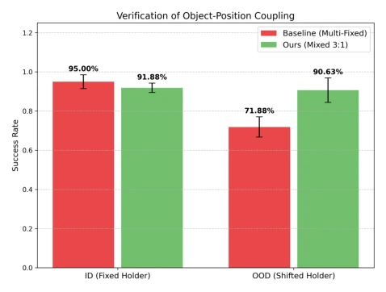
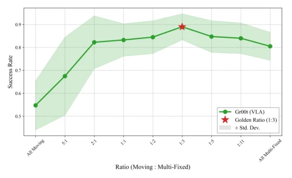
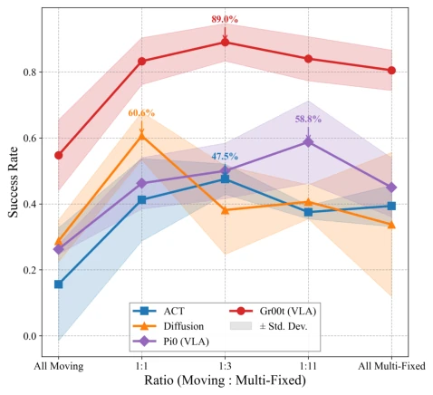
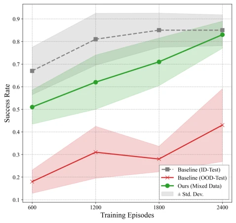

VLA 模型在真实部署中面临严峻的空间泛化挑战，微小的相机位姿扰动就会导致性能崩塌 [1]-[4]。现有工作多依赖架构改进（如引入 3D 深度 [9]、[10]）或数据增强 [20]、[21]，但往往无法根除“捷径学习”问题。模型容易陷入隐式耦合陷阱：Camera-Base Coupling（死记相机与背景关系）、Camera-Object Coupling（依赖固定视角）、Object-Position Coupling（过拟合物体相对位置）。单纯增加静态视角（Multi-Fixed）无法打破这些关联，导致在未见配置下失效。因此，亟需一种数据中心的范式，通过动态视角和物体配置多样性，强制模型学习真正的空间关系而非虚假相关性。
—

Fig. 1. Hierarchical Spatial Zoning for Data Collection. We con- ceptualize the robot’s camera workspace into three configurations: Fixed View, where the camera is static; Multi-Fixed View, where the camera is static within an episode but varies across episodes; and Moving View, the decoupling zone where the camera moves continuously to break spurious correlations. Our key insight is that low-cost decoupled data from Moving Views can robustify the policy trained on Multi-Fixed Views.
Fig. 3. Real-world Realization of Camera Viewpoint Configurations. We implement Fixed, Multi-Fixed, and Moving Views using an environ- mental camera controlled by a separate robot arm. The Moving View configuration (Decoupling Zone) allows for continuous trajectory sampling to break spurious correlations.

Fig. 4. Experimental Setup. A robot arm controls a mobile environmental eye capturing data from various viewpoints, while another one with a wrist- mounted camera performs manipulation tasks.
Fig. 5. Shortcut learning (Camera-Base). While the Fixed View Baseline collapses on Moving Tests (OOD), our method maintains high performance. Error bars denote standard deviation. Here, ID = same fixed camera and holder as training; OOD = moving camera (Exp.1 convention).

Fig. 6. Verification of Object-Position Coupling. The significant drop in performance when the pen holder is shifted (OOD) demonstrates that the model relies on fixed relative positions rather than true spatial understanding. Our method (Green) successfully breaks this coupling.

Fig. 7. Impact of Data Composition Ratio. For Gr00t, the success rate peaks at Moving:Multi-Fixed = 1:3 (Golden Ratio). Shaded regions denote standard deviation.

Fig. 9. Universality of the Data Strategy. All evaluated architectures (ACT, Diffusion, and VLA models including Pi0 and Gr00t) benefit from the mixed data strategy, with Gr00t showing the highest peak performance. Shaded regions denote standard deviation.

Fig. 8. Cross-Task Spatial Generalization Transfer. Our method (Green), leveraging auxiliary data, consistently outperforms the Baseline (Red) on the challenging Moving Test set, achieving high success rates with fewer task- specific episodes. Shaded regions denote standard deviation.